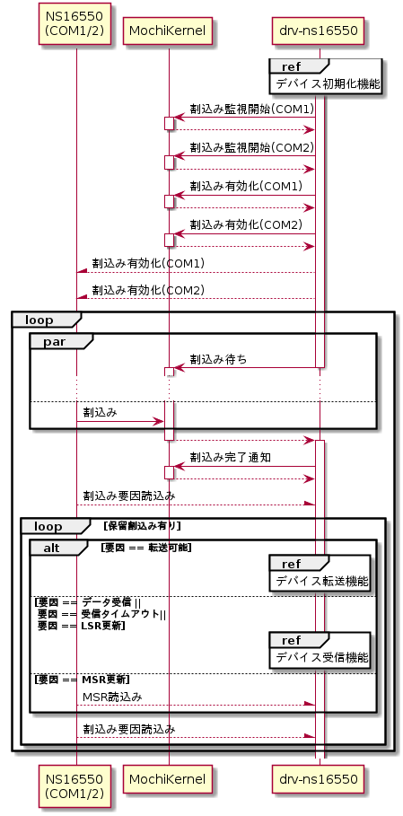
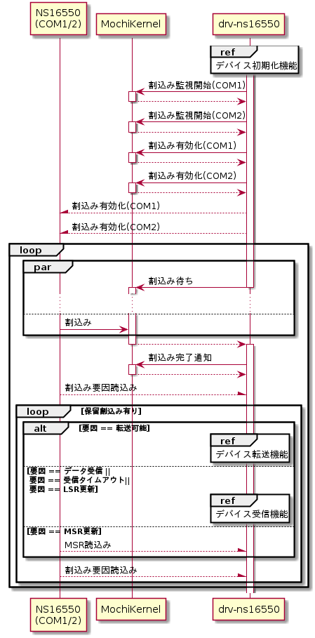

デバイス割込み待ち合わせ機能
デバイス転送/受信制御を割り込み契機で行うために、カーネルとデバイスの割込みを有効化しデバイスからの割込みを待ち合わせる。以下にシーケンスを示す。
シーケンス図


割込み監視開始
NS16550からの割込み待ちを可能にするために、待ち合わせる割込み番号毎にMochiKernelに割込み監視開始を通知する。割込み監視開始は、MochiKernelライブラリのLibMkIntStartMonitoring()を用いて行う。設定するパラメータを以下に示す。
LibMkIntStartMonitoring()設定パラメータ
| # | 引数名 | 設定値 | |
| COM1 | COM2 | ||
| 1 | irqNo | LIBMK_INT_IRQ4 | LIBMK_INT_IRQ3 |
| 2 | *pErr | エラー要因格納先変数ポインタ | |
割込み有効化(カーネル)
NS16550からの割込みを受け付け可能にするために、受け付ける割込み番号毎にMochiKernelに割込み有効化を設定する。割込み有効化は、MochiKernelライブラリのLibMkIntEnable()を用いて行う。設定するパラメータを以下に示す。
LibMkIntEnable()設定パラメータ
| # | 引数名 | 設定値 | |
| COM1 | COM2 | ||
| 1 | irqNo | LIBMK_INT_IRQ4 | LIBMK_INT_IRQ3 |
| 2 | *pErr | エラー要因格納先変数ポインタ | |
割込み有効化(デバイス)
NS16550の割込みを有効化するために、デバイス毎に割込み有効化設定を行う。割込み有効化設定は、IER(Interrupt Enable Register)とMCR(Modem Control Register)を以下の通りに設定することで行う。
割込み有効化(デバイス)設定
| 手順 | I/O port | bit | 値 | 意味 | 備考 | |
| COM1 | COM2 | |||||
| 1 | 0x03F9 | 0x02F9 | 7-4 | 0 | 予約 | |
| 3 | 1 | MSR割込み許可 | MSR: Modem Status Register | |||
| 2 | 1 | LSR割込み許可 | LSR: Line Status Register | |||
| 1 | 1 | THR割込み許可 | THR: Transmit Holding Register | |||
| 0 | 1 | RBR割込み許可 | RBR: Receiver Buffer Register | |||
| 2 | 0x03FC | 0x02FC | 7-5 | 0 | 予約 | |
| 4 | - | 変更しない | ||||
| 3 | 1 | OUT2=L(割り込み許可) | ||||
| 2-0 | - | 変更しない | ||||
割込み待ち合わせ
割込み待ち合わせはMochiKernelライブラリのLibMkIntWait()を用いて行う。設定パラメータを以下に示す。
LibMkIntWait()設定パラメータ
| # | 引数名 | 設定値 |
| 1 | *pIrqList | 割込み番号リスト格納先変数ポインタ |
| 2 | *pErr | エラー要因格納先変数ポインタ |